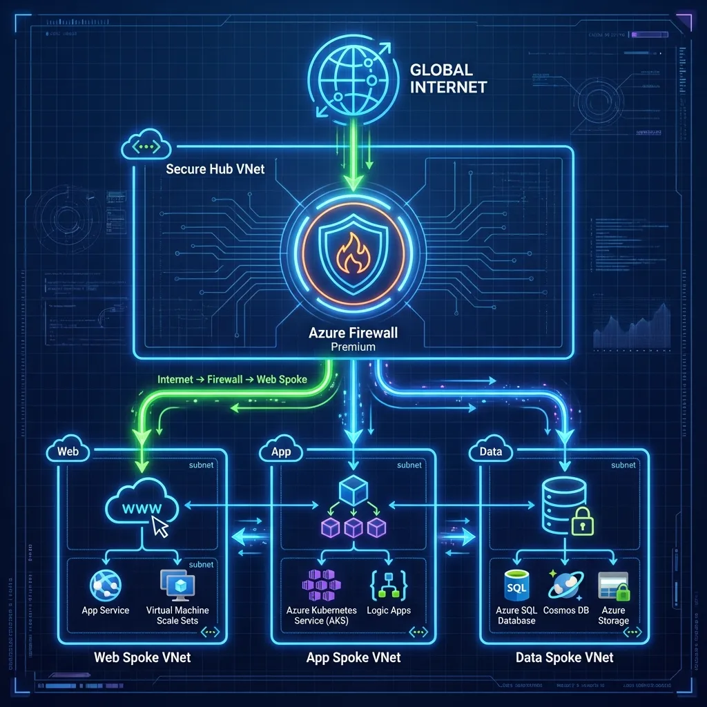
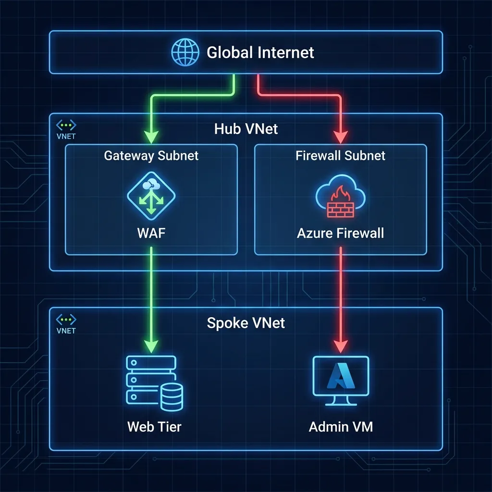
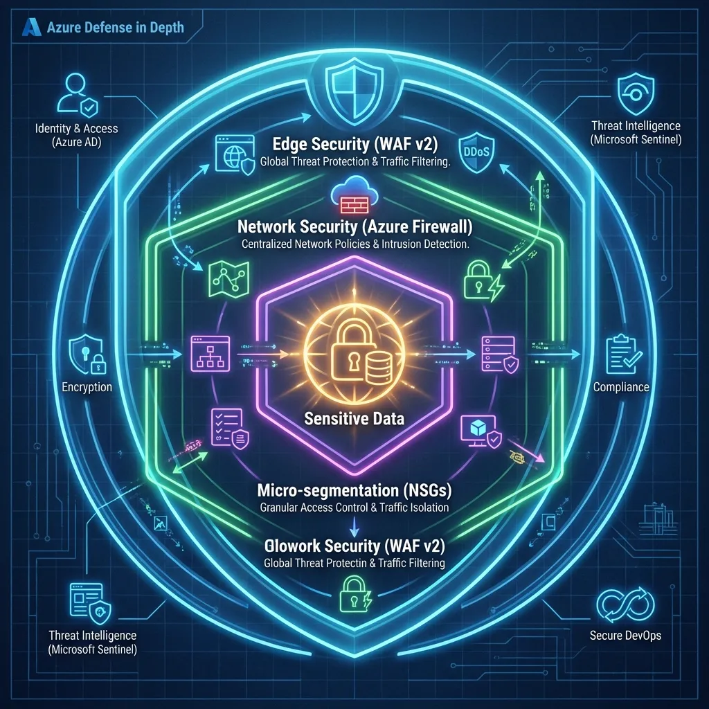
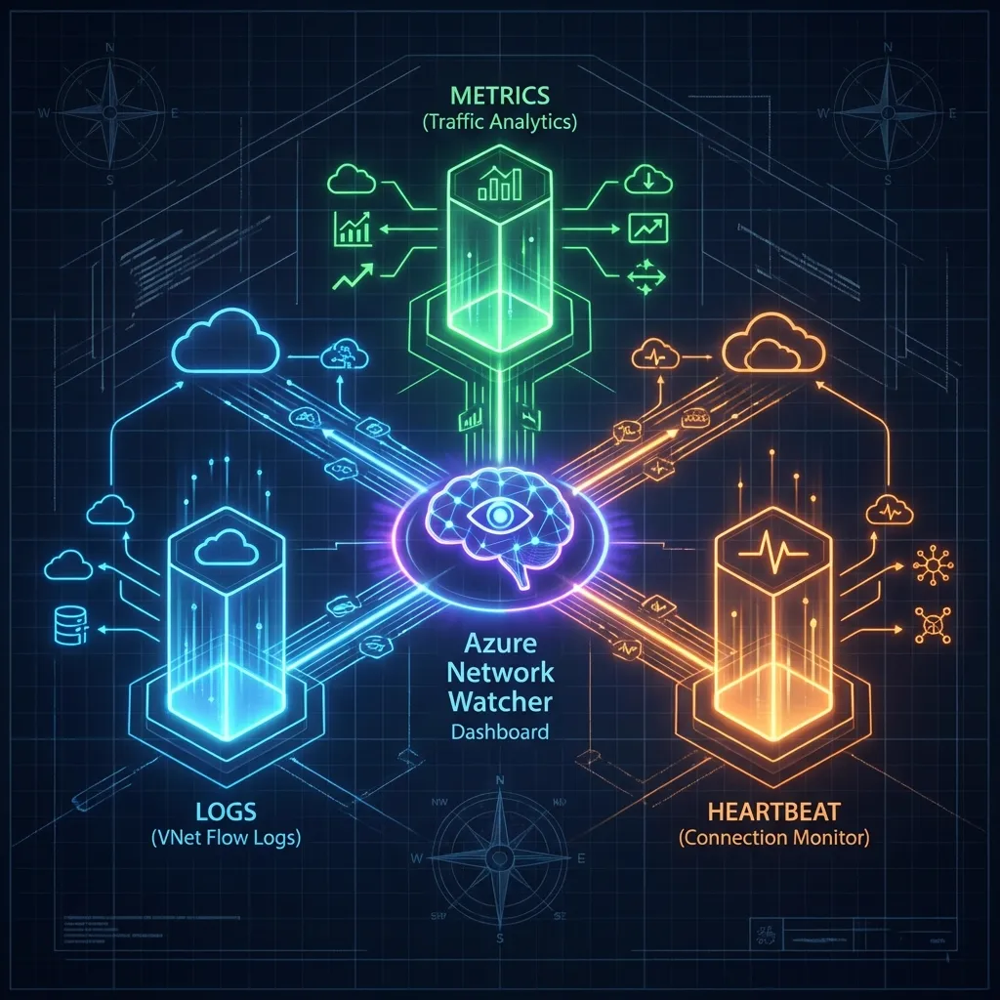
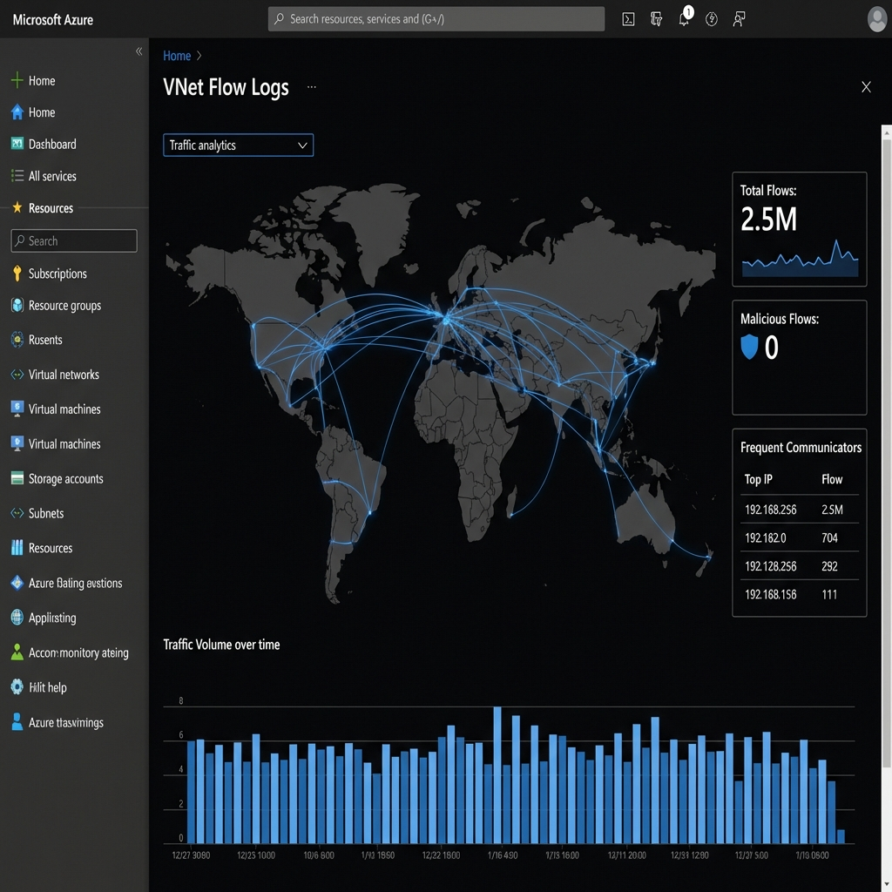
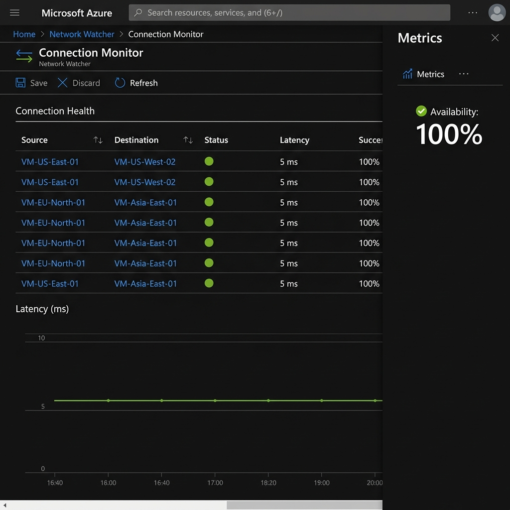
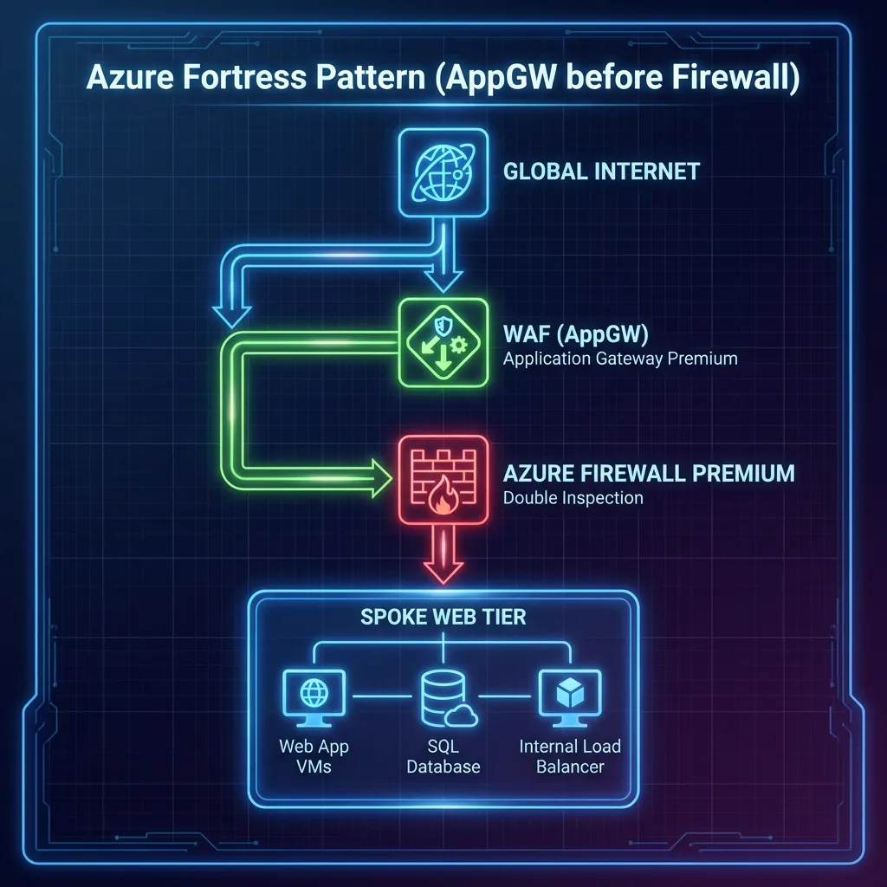
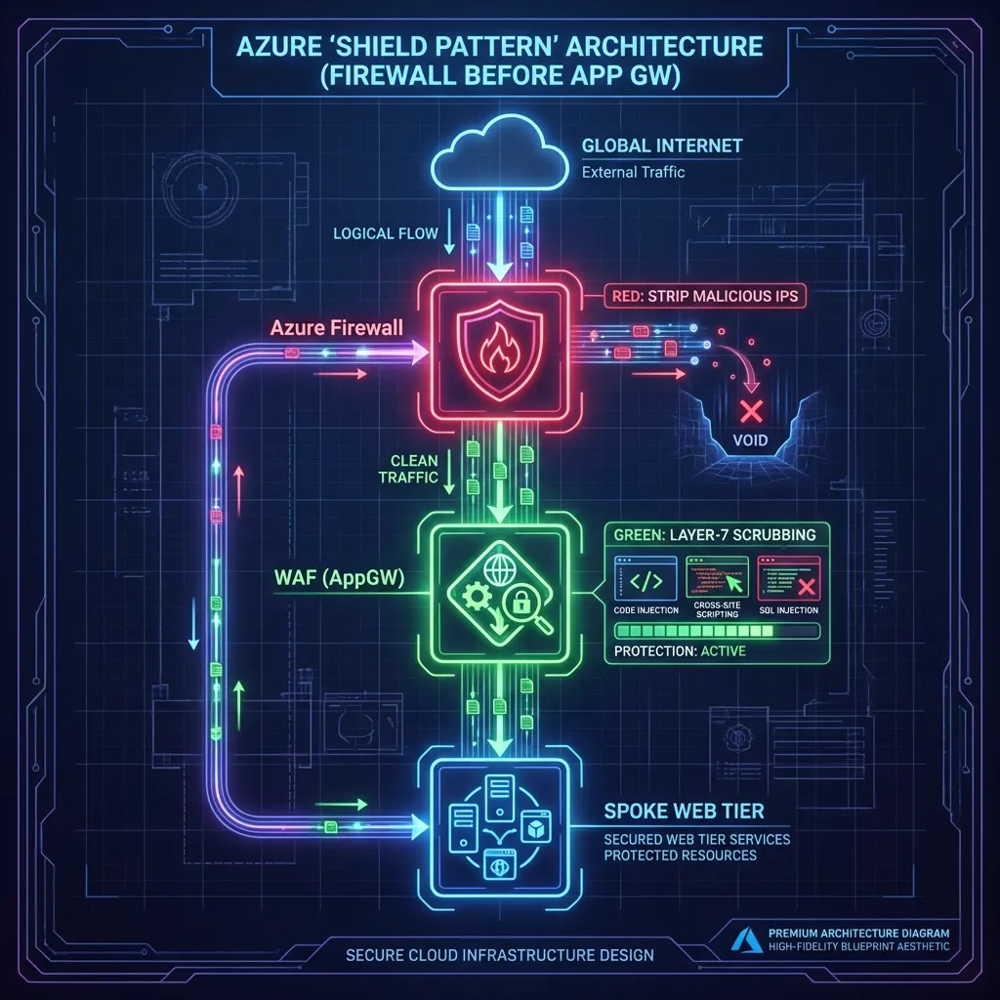

Real-world networks don't just "connect"—they inspect, block, and audit. In production, unmonitored peering isn't a bridge; it's an uncontained blast radius.
Reliability failures are often "Day 2" ops failures: drift, silent blocks, and opaque paths. When the Incident Commander demands an RCA (Root Cause Analysis) after a Sev-1 outage, a static Visio diagram is an admission of failure.
This is not "Hello World". This is a Production Landing Zone built for auditability, using the "Trinity of Observability" to mathematically prove network health.
Observability isn't a Day 2 'extra'. It's the validation logic that proves your security policies are actualized. Without it, you aren't an architect; you're just a gambler hoping that packets find their way.
1. The Architecture: Hub-and-Spoke Reality
We implemented a Microsoft-native landing zone that mandates inspection and continuously validates assertions. This isn't just about connectivity; it's about Control.
New to Azure? Think of VNet Peering like a direct highway between two cities. By default, cars just drive through. A User Defined Route (UDR) is like a mandatory exit ramp—it forces every car to pass through a security toll booth (the Firewall) before they can finish their journey.

The Core Components
- Hub VNet (Secure Core): The central inspection point (
10.0.0.0/16) hosting Azure Firewall Premium in its dedicated10.0.1.0/24subnet. - Spoke 1 (IaaS Workload): Hosts Windows Server 2022 ("UKLabs") in
10.1.0.0/16. No Public IPs allowed. - Spoke 2 (PaaS Workload): Hosts VNet-integrated Linux Web Apps in
10.2.0.0/16, forcing traffic through the Hub. - On-Prem Simulation: A dedicated VNet peered to the Hub to mimic an ExpressRoute connection, proving hybrid connectivity.
2. Design Decision: Parallel Edge Security
A common debate in Azure networking is "Serial Chaining" (WAF -> Firewall -> App) versus "Parallel" (WAF -> App, Firewall -> Internet). We chose Parallel (Zero Trust Edge).

Why Parallel?
- Efficiency: Avoids the "Firewall Tax" (latency and throughput costs) on pure web traffic that has already been scrubbed by the WAF.
- Visibility: Preserves the Client IP address for WAF geo-blocking and logging.
- Specialization: The WAF handles OWASP threats (SQLi, XSS), while the Firewall handles core IDPS and TLS inspection for egress.
3. Security: Defense in Depth
Security is not a single appliance; it's layers. Our design implements a "Defense in Depth" strategy where no single failure results in compromise.

The Non-Negotiables
- Single Inspection Plane: Azure Firewall Premium is the only path for east-west and egress traffic.
- Mandatory WAF: Inbound HTTP(S) must pass through App Gateway WAF v2 in Prevention Mode.
- Micro-segmentation: NSGs are applied on every subnet with a "Default Deny" mindset.
4. The "Trinity" of Observability
This is where most implementations fail. They build the network but forget to build the eyes to see it. We implement three pillars to "prove the negative."

The Proof of Life: Below are the actual outcomes of the Trinity implementation. These aren't just logs—they are the operational brain of your Landing Zone.


| Tool | Role | What it does |
|---|---|---|
| VNet Flow
Logs (Recommended) |
The Wide Lens | Records entire VNet traffic. Captures encryption status. The modern standard. |
| NSG Flow
Logs (Legacy) |
The Macro Lens | Records granular Subnet/NIC events. Use only for legacy parity. |
| Traffic Analytics | The Brain | Visualizes flows, detecting malicious IPs and drift. |
| Connection Monitor | The Pulse | Tests critical paths (VM -> Google DNS) 24/7. |
💡 Architect's Note: VNet Flow Logs vs. NSG Flow Logs
Microsoft is evolving from NSG Flow Logs to the newer VNet Flow Logs engine. While they look similar, the distinction matters for simple reasons:
- Simplicity: VNet Flow Logs are enabled at the VNet level, preventing the "missed subnet" configuration drift common with NSG-level logging.
- Encryption Visibility: Only VNet Flow Logs can report the Encryption Status of traffic (critical if using VNet Encryption).
When to use which?
- ✅ USE VNet Flow Logs: For all new deployments ("Greenfield") and when you need to audit VNet Encryption.
- ⛔ DO NOT USE NSG Flow Logs: Unless you have a specific legacy requirement to monitor only a single NIC in a shared subnet to save fractional storage costs.
- Blind Spots: Remember that traffic to a Private Endpoint cannot be recorded at the endpoint itself. You must capture it at the source VM (the client side).
5. The Topology Dilemma: Where does the WAF go?
One of the most heated debates in Azure architecture is the placement of the Application Gateway (WAF) relative to the Azure Firewall. Microsoft Learn documents three core patterns. Here is the realist's take on when to use which:
1. The Parallel Pattern (The Pragmatist)
Layout: AppGW and Firewall sit side-by-side. Web traffic hits AppGW; Non-web hits Firewall.
- ✅ Pros: Simplest routing. No double-encryption capability needed. Cheapest.
- ⛔ Cons: Azure Firewall does NOT inspect the web traffic. You rely 100% on the WAF.
- Verdict: Use this for 90% of standard enterprise apps where WAF protection is sufficient.
2. AppGW -> Firewall (The Fortress)
Layout: Traffic hits WAF first, then is piped through Firewall for heavy inspection.

- ✅ Pros: "Zero Trust". Firewall sees everything, even web packets. Preserves Client IP (via X-Forwarded-For).
- ⛔ Cons: Complex UDRs. Needs Azure Firewall Premium to meaningful inspect encrypted web traffic (TLS Inspection).
- Verdict: Mandatory for Banking/High-Compliance where Defense in Depth is audited.
3. Firewall -> AppGW (The Shield)
Layout: Firewall filters bad IPs at the edge, THEN passes clean traffic to WAF.

- ✅ Pros: Stops DDoS/Scanners before they touch your expensive WAF instances.
- ⛔ Cons: Major Trap: The WAF only sees the Firewall's IP, not the Client ID, unless you enable expensive Proxy modes.
- Verdict: Rare. Use only if you have a massive IP-blocking requirement at the edge.
The Veteran's Trap: Asymmetric Routing
In a real-world Hub-and-Spoke, traffic often fails because it takes two different paths. Request goes through the Firewall; Response tries to bypass it via a default peering route. The Firewall sees a one-way connection and "gracefuly" drops the packet (Stateful Filtering).
The Fix: Use a Gateway UDR. You must apply a
0.0.0.0/0 route to the GatewaySubnet (in the Hub) pointing to the
Firewall's internal IP. This ensures the "return leg" of the conversation is forced back through
the
same inspector.
The Airport Analogy: Imagine you go through **Airport Security** to catch a flight. The guard checks your ID and lets you in. If you try to return by walking through the **unmanned baggage exit**, the security system freaks out. Why? Because the guards at the exit never saw you leave, and the guards at the entrance are still waiting for you to walk back past them. A Stateful Firewall is that guard—if it doesn't see the "Hello" (Request), it will never allow the "Goodbye" (Response).
6. Troubleshooting the Trenches: The "404 Ghost"
The "404 Ghost" is the single most expensive support ticket in Azure networking. It’s rarely a 'down' service; it’s almost always a Host Header mismatch during the initial handshake.
The Problem: What actually happened
Imagine you went to a high-security office building and said to the receptionist: “Hi, I’m here to meet someone.”
The receptionist looks at you and says: “Who exactly? I only let people in if you ask for a specific name.”
That’s what our initial 404 Not Found error was. The Application Gateway was knocking on the App Service’s door but saying something vague like: “I’m here for a website.”
Azure App Service is a multi-tenant environment. It says: “I only respond if you call me by my exact name.” That “exact name” is the Host header.
Why App Service rejected the request
- Decision Engine: App Service uses the Host header to decide which app you’re asking for among thousands.
- Identity Crisis: The Application Gateway was sending a generic Host header; the App Service didn’t recognize it.
- Result: 404 – Not Found. Nothing was broken; the app was just being called by the wrong name.
The Fix: Use its Real Name
We told the Gateway: “When you talk to the App Service, use its real name, not a generic one.”
pick_host_name_from_backend_address = trueThis tells the Gateway: “Look at the backend URL (app-spoke2-obs…), and use that exact hostname in every request.”
The Takeaway: The app was fine. The gateway was just using the wrong name. Once it used the app’s real hostname, the 404 disappeared, and traffic flowed normally.
7. The Cost of Reality (FinOps)
"Why Premium? Why not Standard?" This is the most common question I get. The answer is simple: TLS Inspection.
Standard Firewall is blind to encrypted traffic (which is 99% of modern malware c2). If you can't inspect inside the HTTPS tunnel, you aren't secure; you're just routing packets.
The Expert's Scalability Check: In high-throughput Landing Zones, watch out for
SNAT
Port Exhaustion. If your Spokes are making thousands of concurrent outbound API calls,
the
Firewall's Public IP pool will run dry.
Solution: Scale horizontally by adding more Public IPs to the Firewall instance
(up
to
250 supported).
Don't forget the Observability tax: While NSG Flow Logs are cheap (pennies/GB), looking at them isn't. Traffic Analytics processing and the Connection Monitor agents (approx. $25/month per node) add up. However, compared to the $10,000/hour cost of a Sev-1 outage where you "guess" the root cause, it's a negligible insurance premium.
8. Future Hardening
To move from "Baseline" to "Enterprise Standard," the roadmap includes:
- Single Pane of Glass: Azure Workbook to correlate "Red" traffic flows with Firewall Deny events.
- Policy-Driven Governance: Assigning Azure Policy (e.g.,
Deny-PublicIP-On-Spokes) to enforce standards in code. - Azure Network Manager: Transitioning from manual peering to Connectivity Groups and global "Security Admin Rules" to manage the "Lie" at scale. Use this once you surpass 5 Spokes.
- Centralized DNS Resolver: Implementing the Private DNS Resolver Hub to eliminate static forwarders and prevent internal DNS leaks.
- CI/CD Pipelines: Moving from local "ClickOps" to GitHub Actions using OIDC Federation.
- Identity Hardening: Enabling System Assigned Managed Identity for Spoke VMs for zero-credential access.
📚 Deep Dive Resource Kit
Curated assets for building and auditing production-grade Azure environments.
VNet Flow Logs Guide
The next-gen engine for total VNet visibility and encryption auditing.
Security Baseline
Official Microsoft security controls for Network Watcher compliance.
Network Deep Dive
Advanced diagnostic patterns and real-world troubleshooting workflows.
MSFT Security Blog
Stay ahead of edge-case vulnerabilities and new inspection features.
Ready to deploy?
The full Terraform codebase, including the Windows Server 2022 refactor and Connection Monitor logic, is available on GitHub.
Architect's Post-Deployment Checklist
Before you hand over the keys to the platform team, ensure you can answer 'Yes' to these five high-stakes questions:
0.0.0.0/0
UDR
pointing to the Firewall Hub IP (and is BGP propagation disabled)?
pick_host_name_from_backend_address set
on all App Gateway backends to kill the "404 Ghost"?
Architecture Audit Certified
Your Landing Zone meets the Senior Architect standard for production-grade networking.